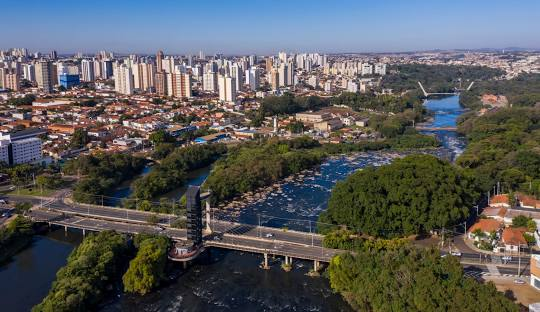
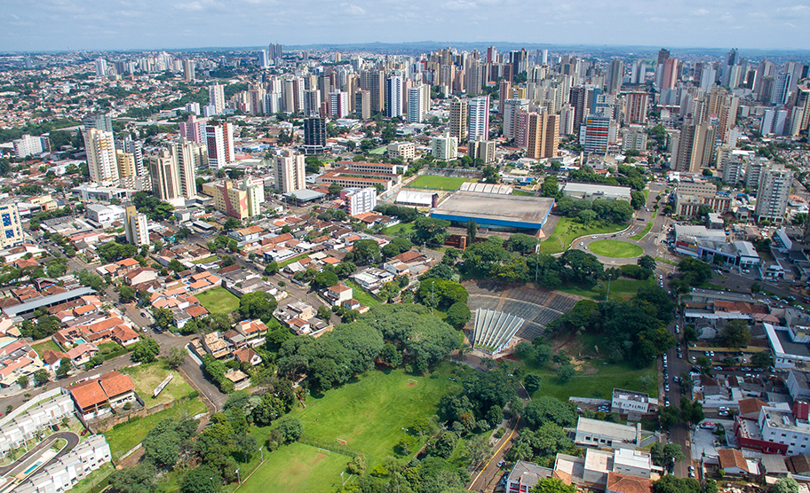
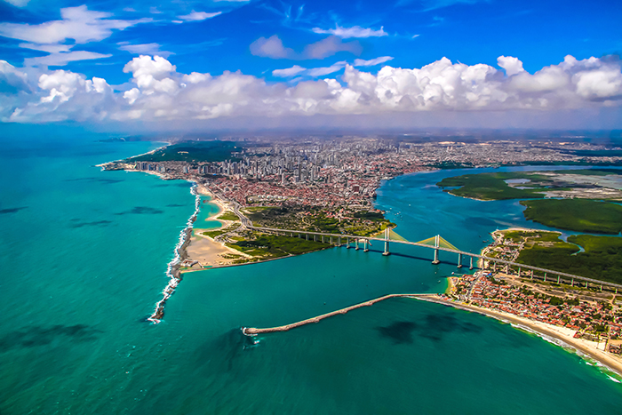
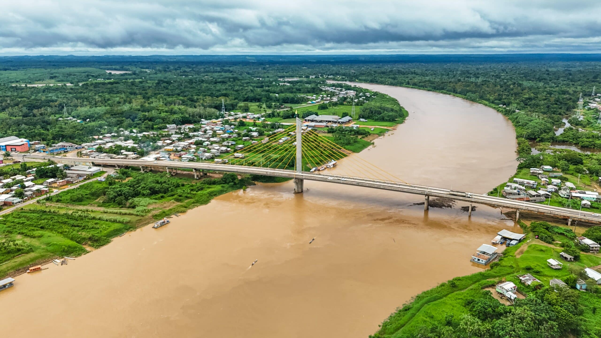
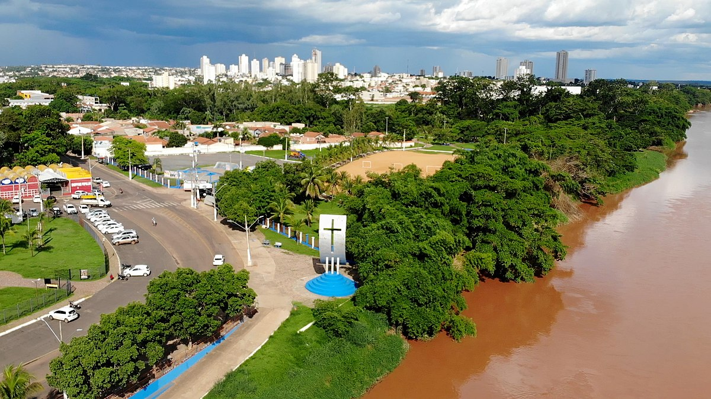
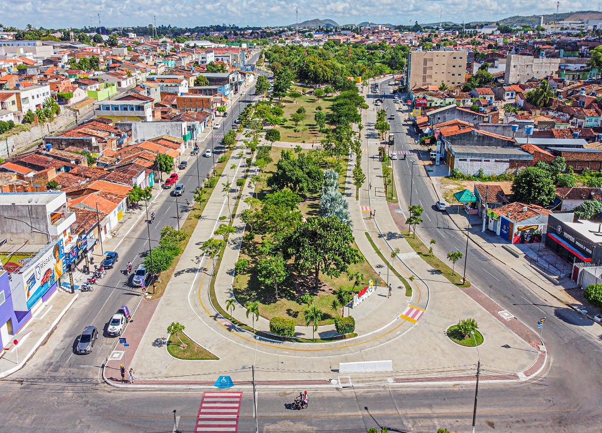

| Estado (UF) | Cidade | Dados da cidade | Foto |
|---|---|---|---|
| SP | Piracicaba | População no último censo: 423.323 pessoas Área territorial: 1.378,069 km² Densidade demográfica: 307,19 hab/km² |
 |
| PR | Londrina | População no último censo: 555.965 pessoas Área territorial: 1.652,569 km² Densidade demográfica: 336,42 hab/km² |
 |
| RN | Natal | População no último censo: 751.300 pessoas Área territorial: 167,401 km² Densidade demográfica: 4.488,03 hab/km² |
 |
| AM | Juruá | População no último censo: 10.742 pessoas Área territorial: 19.438,805 km² Densidade demográfica: 0,55 hab/km² |
 |
| MT | Rondonópolis | População no último censo: 244.911 pessoas Área territorial: 4.824,505 km² Densidade demográfica: 50,77 hab/km² |
 |
| AL | Arapiraca | População no último censo: 234.696 pessoas Área territorial: 346,188 km² Densidade demográfica: 678,99 hab/km² |
 |
| Região do Brasil | Estado (UF) | Cidade | Dados da cidade | Foto |
|---|---|---|---|---|
| Sudeste | SP | Piracicaba | População no último censo: 423.323 pessoas Área territorial: 1.378,069 km² Densidade demográfica: 307,19 hab/km² |
|
| Sul | PR | Londrina | População no último censo: 555.965 pessoas Área territorial: 1.652,569 km² Densidade demográfica: 336,42 hab/km² |
|
| Nordeste | RN | Natal | População no último censo: 751.300 pessoas Área territorial: 167,401 km² Densidade demográfica: 4.488,03 hab/km² |
|
| AL | Arapiraca | População no último censo: 234.696 pessoas Área territorial: 346,188 km² Densidade demográfica: 678,99 hab/km² |
||
| Norte | AM | Juruá | População no último censo: 10.742 pessoas Área territorial: 19.438,805 km² Densidade demográfica: 0,55 hab/km² |
|
| Centro-Oeste | MT | Rondonópolis | População no último censo: 244.911 pessoas Área territorial: 4.824,505 km² Densidade demográfica: 50,77 hab/km² |